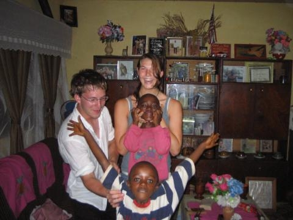

Each year, Hope Foundation organizes a number of projects in Cameroon that welcome volunteers from all over the world. You can choose between ongoing programs or summer programs (June-August). On site we would like to give you the opportunity to gain new experiences of a different culture and a different lifestyle. In addition, living and working together offers an excellent opportunity to make new friends and learn more about a fascinating country.
We welcome you at any time to support us in our work. The success of our work depends on your enthusiasm and dedication. Your time, energy and talent can make a difference where help is really needed. To apply, please click here or send us an email (office [at] hope-found.org).
Programs

The time required depends on the selected programs. Basically you support us 6 - 7 hours a day (Mon-Fri). The weekends and Cameroonian holidays are free and you can use them for excursions or design them as you wish.
The summer programs are usually carried out in small groups and for 3 months, while ongoing programs are carried out individually and can last from 4 months to a year. You can always freely decide which programs and for how long you want to participate. We can take into account special requests regarding the duration or type of programs.
Here you can see a complete list of all programs.
Duration, accommodation and costs
As the Hope Foundation is a small NGO with limited financial resources, we ask all volunteers to pay their own expenses during their stay in Cameroon. Overall, accommodation and meals for the above option cost around € 100 / week. Of course, our volunteer coordinator can help volunteers find alternative accommodations and transportation options regardless of the Hope Foundation. The longer you stay in Cameroon, the cheaper the costs will be !!
As soon as we have received your application form, we will confirm your application by email.
We are waiting for you to become part of our family!